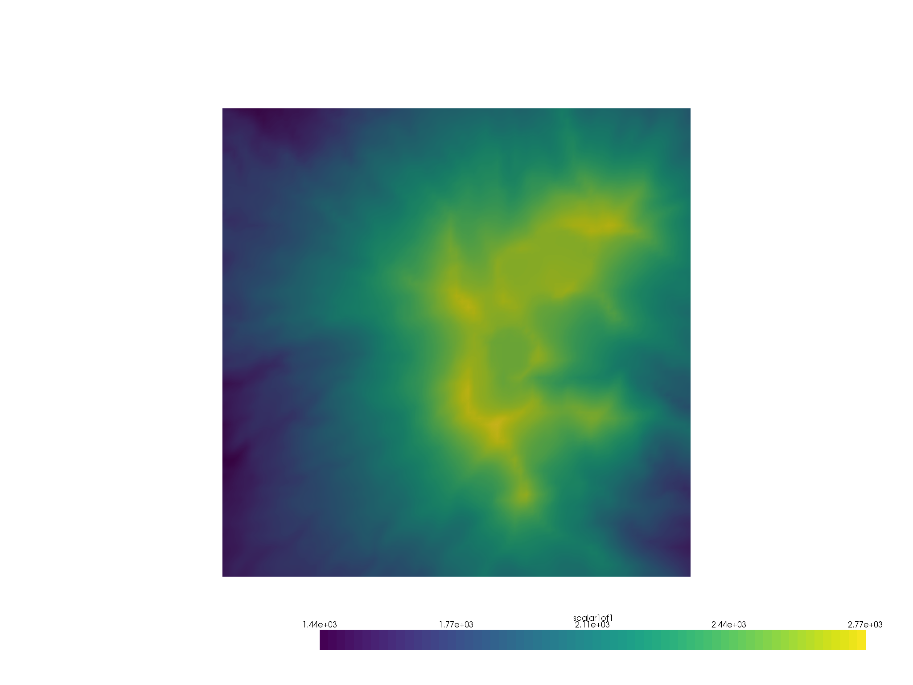
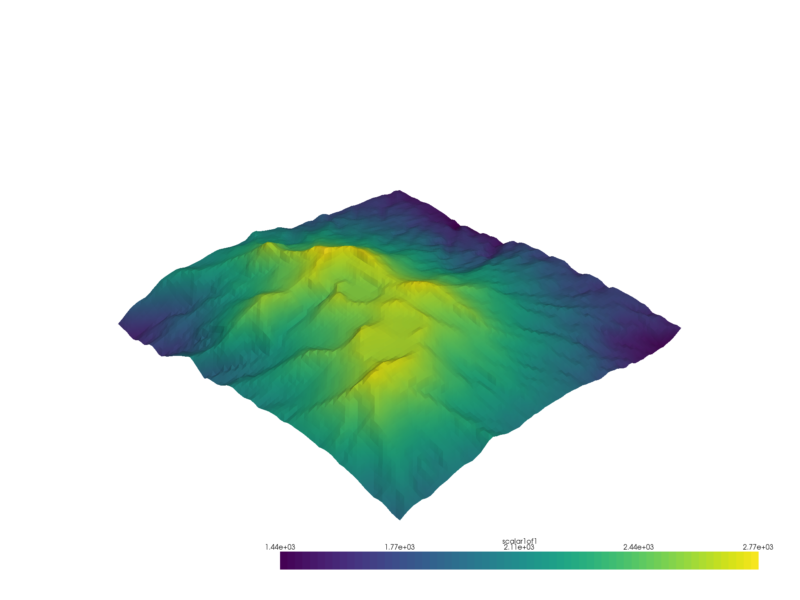
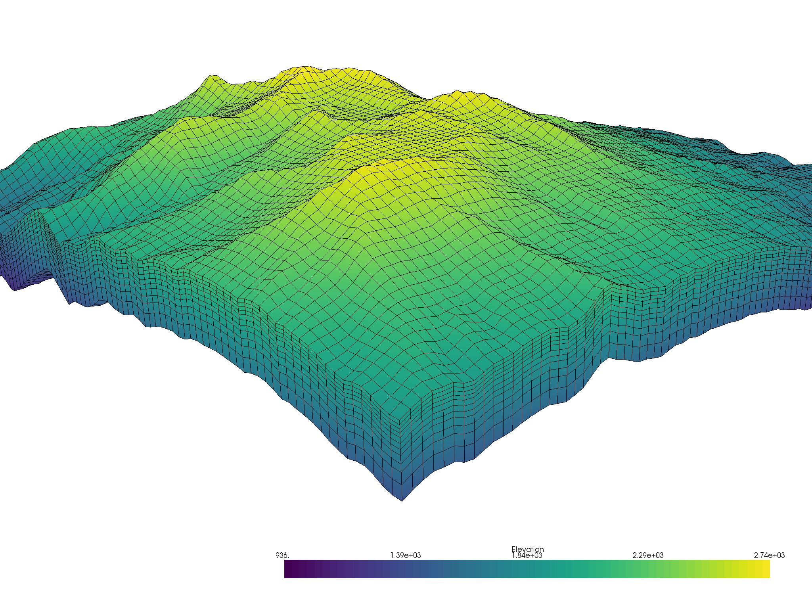

Note
Click here to download the full example code
Terrain Following Mesh¶
Use a topographic surface to create a 3D terrain-following mesh.
Terrain following meshes are common in the environmental sciences, for instance in hydrological modelling (see Maxwell 2013 and ParFlow).
In this example, we domonstrate a simple way to make a 3D grid/mesh that follows a given topographic surface. In this example, it is important to note that the given digital elevation model (DEM) is structured (gridded and not triangulated): this is common for DEMs.
# sphinx_gallery_thumbnail_number = 3
import pyvista as pv
import numpy as np
from pyvista import examples
Download a gridded topography surface (DEM)
dem = examples.download_crater_topo()
dem
| Header | Data Arrays | ||||||||||||||||||||||||||||||
|---|---|---|---|---|---|---|---|---|---|---|---|---|---|---|---|---|---|---|---|---|---|---|---|---|---|---|---|---|---|---|---|
|
|
Now let’s subsample and extract an area of interest to make this example
simple (also the DEM we just load is pretty big).
Since the DEM we loaded is a pyvista.UniformGrid mesh, we can use
the pyvista.UniformGridFilters.extract_subset() filter:
subset = dem.extract_subset((500, 900, 400, 800, 0, 0), (5,5,1))
subset.plot(cpos="xy")

Out:
[(1820500.0, 5649000.0, 16392.304845413266),
(1820500.0, 5649000.0, 0.0),
(0.0, 1.0, 0.0)]
Now that we have a region of interest for our terrain following mesh, lets make a 3D surface of that DEM:
terrain = subset.warp_by_scalar()
terrain
| Header | Data Arrays | ||||||||||||||||||||||||||||
|---|---|---|---|---|---|---|---|---|---|---|---|---|---|---|---|---|---|---|---|---|---|---|---|---|---|---|---|---|---|
|
|
terrain.plot()

Out:
[(1830079.2876189426, 5658579.287618943, 11684.58760673553),
(1820500.0, 5649000.0, 2105.2999877929688),
(0.0, 0.0, 1.0)]
And now we have a 3D structured surface of the terrain! We can now extend
that structured surface into a 3D mesh to form a terrain following grid.
To do this, we first our cell spacings in the z-direction (these start
from the terrain surface). Then we repeat the XYZ structured coordinates
of the terrain mesh and decrease each Z level by our Z cell spacing.
Once we have those structured coordinates, we can create a
pyvista.StructuredGrid.
z_cells = np.array([25]*5 + [35]*3 + [50]*2 + [75, 100])
xx = np.repeat(terrain.x, len(z_cells), axis=-1)
yy = np.repeat(terrain.y, len(z_cells), axis=-1)
zz = np.repeat(terrain.z, len(z_cells), axis=-1) - np.cumsum(z_cells).reshape((1, 1, -1))
mesh = pv.StructuredGrid(xx, yy, zz)
mesh["Elevation"] = zz.ravel(order="F")
mesh
| Header | Data Arrays | ||||||||||||||||||||||||||||
|---|---|---|---|---|---|---|---|---|---|---|---|---|---|---|---|---|---|---|---|---|---|---|---|---|---|---|---|---|---|
|
|
cpos = [(1826736.796308761, 5655837.275274233, 4676.8405505181745),
(1821066.1790519988, 5649248.765538796, 943.0995128226014),
(-0.2797856225380979, -0.27966946337594883, 0.9184252809434081)]
mesh.plot(show_edges=True, lighting=False, cpos=cpos)

Out:
[(1826736.796308761, 5655837.275274233, 4676.8405505181745),
(1821066.1790519988, 5649248.765538796, 943.0995128226014),
(-0.27978562253809786, -0.2796694633759488, 0.9184252809434079)]
Total running time of the script: ( 0 minutes 9.583 seconds)